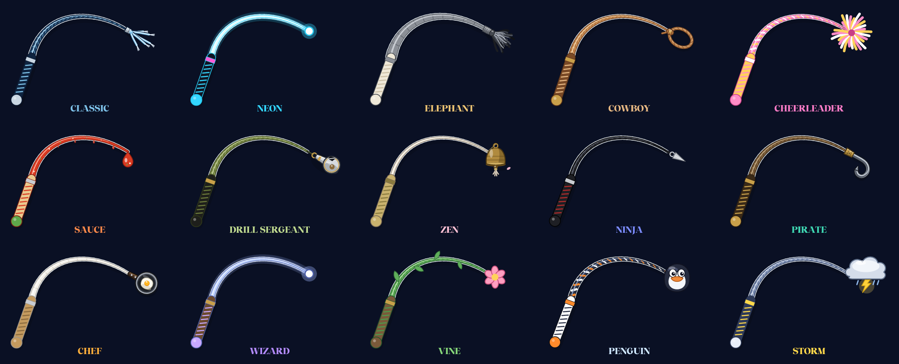
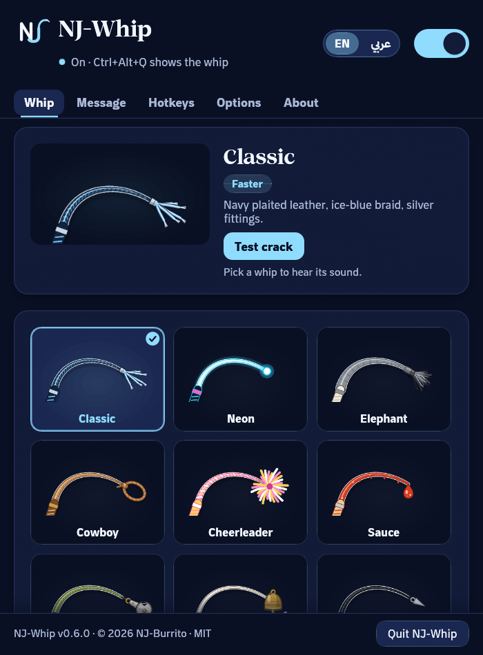

سوط على الشاشة لـ Claude Code
اضغط Ctrl+Alt+Q فيظهر السوط عند مؤشر الفأرة. فرقعه، فيكتب تعليمة قصيرة واحدة في النافذة التي كنت فيها آخر مرة.
مجاني ومفتوح المصدر برخصة MIT. ملف exe صغير واحد، حجمه نحو 6.5 ميغابايت، بلا برنامج تثبيت. لنظام Windows 10 بتحديث 2004 أو أحدث. الإصدار 0.3.0.
كيف يعمل
-
أظهر السوط
اضغط Ctrl+Alt+Q فيظهر السوط عند مؤشر الفأرة.
-
فرقعه
لوح بالسوط: اسحبه في اتجاه، ثم اخطفه في الاتجاه المعاكس. التلويح المتراخي ذهابا وإيابا يصدر حفيفا فقط، وكل خطفة تفرقع مرة واحدة. ويمكنك أيضا أن تنقر، أو أن تضغط Ctrl+Alt+W.
-
يكتب عنك
الفرقعة تشغل صوت السوط وتأثيره. ثم تكتب رسالة قصيرة واحدة في النافذة التي كنت فيها آخر مرة: عبارة السوط المرحة ومعها تعليمة حقيقية، ثم Enter.
15 سوطا وخمسة اتجاهات
كل سوط يوجه Claude في واحد من خمسة اتجاهات: أسرع (Faster)، أو أكثر اجتهادا (Harder)، أو أكثر حذرا (Careful)، أو أكثر بهجة (Happier)، أو تركيز (Focus).
لكل سوط شكله وطرفه ووزنه وتأثير فرقعته وعباراته. السوط الثقيل يتأخر عن يدك، والخفيف يستجيب فورا.
يمكن لأي سوط أن يحمل صورة من عندك طرفا له. وتحفظ الصورة على حاسوبك فقط.

واصل الفرقعة فتدفأ الشاشة
يمتلئ مؤشر الحرارة بعد 4 فرقعات. ويفرغ بعد نحو ثانية من آخر فرقعة.
عند امتلائه تتوهج حواف الشاشة بنعومة بلون السوط نفسه وأسلوبه. التوهج لا يكون أحمر أبدا، والشاشة لا تهتز أبدا.
وسلسلة الفرقعات المتتالية تظهر عبارة تتابع مثل STOMP ×3.
ماذا تكتب الفرقعة
اختر واحدة من ست حزم تعليمات.
- Plain
- nj-kit
- Surgical
- Quiet
- Superpowers
- Plan-first
- Faster وHarder وHappier
- تدخل هذه العبارات قائمة الانتظار دون Esc، فلا يلغى شيء مما يعمله Claude.
- Careful وFocus
- ترسل هذه العبارات بعد Esc، فيتوقف Claude قبل خطوته التالية.
يمكنك أن تضيف عبارات من عندك، وأن تغير المفاتيح التي ترسلها الفرقعة.
وزر Reset Claude يكتب «normal mode» ثم «Continue.».

مصنوع لـ Claude Code أينما كتبت له
يكتب NJ-Whip في أي نافذة كنت فيها آخر مرة. لذلك فهو مصنوع لـ Claude Code أينما كتبت له: لوحة VS Code، أو الطرفية، أو تطبيق Claude لسطح المكتب، أو claude.ai/code.
ملاحظات صريحة
الفرقعة تكتب في أي نافذة كنت فيها آخر مرة، ومنها محرر الشيفرة.
ملف exe لا يحمل توقيعا رقميا، فقد يسألك Windows SmartScreen قبل التشغيل الأول.
لم يجر قياس صياغة التعليمات على جلسات حية.
الإصدار 0.3.0 إصدار مبكر، وليست كل هذه الأماكن (لوحة VS Code، الطرفية، تطبيق Claude لسطح المكتب، claude.ai/code) مختبرة يدويا بعد.
NJ-Whip غير تابع لشركة Anthropic.
الخصوصية
لا حساب. لا اتصال بالشبكة. لا جمع لبيانات الاستخدام.
إعداداتك في ملف واحد على حاسوبك:
%APPDATA%\NJ-Whip\config.toml
احصل على NJ-Whip
ملف exe صغير واحد، حجمه نحو 6.5 ميغابايت. بلا برنامج تثبيت. لنظام Windows 10 بتحديث 2004 أو أحدث. الإصدار 0.3.0، مكتوب بلغة Rust، ومجاني برخصة MIT.